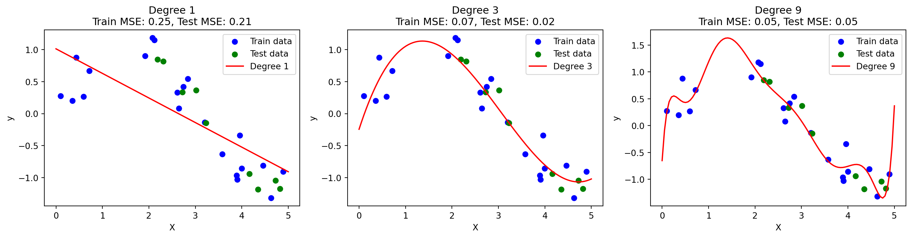
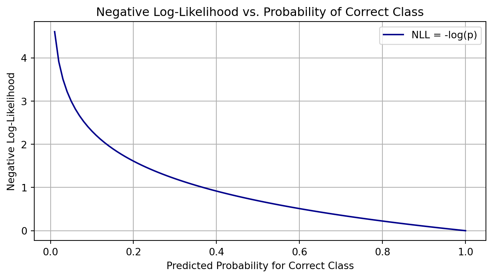
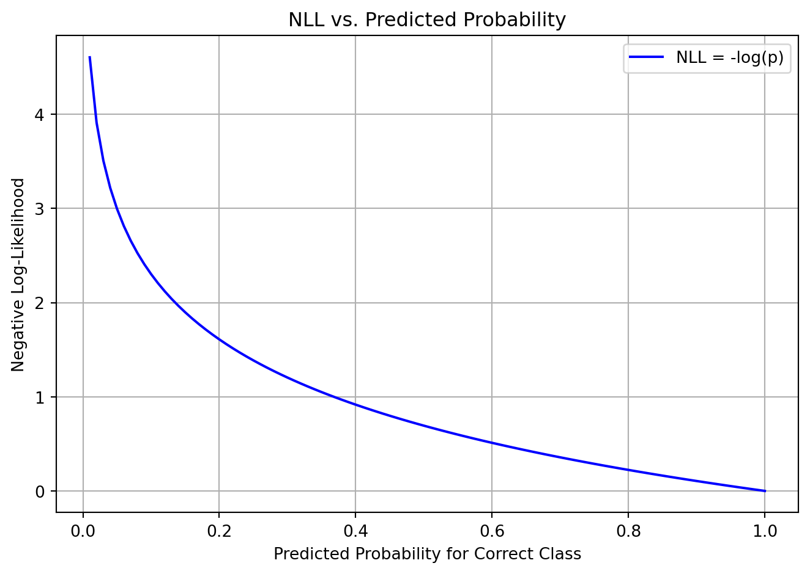
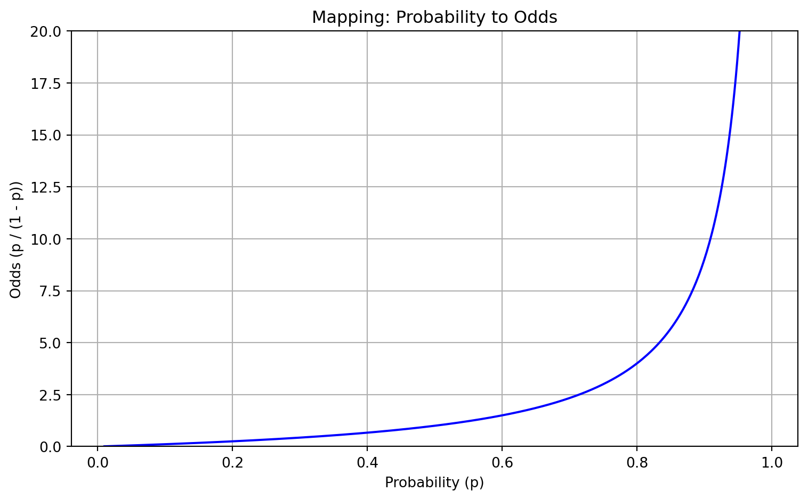

Logistic regression(Tolles and Meurer, 2016) is a model named after the logistic function, which plays a central role in the model.
Originally, the logistic function was created from typical statistical models of population growth. This function takes an S-shaped form and maps real values to a range in \((0, L)\). The general mathematical formula of the logistic function is:
\(x_0\) is the value at the midpoint of the logistic curve,
\(k\) is the growth rate of the logistic function,
\(L\) is the maximum value of the logistic function.
The logistic regression model is often used in classification tasks, especially binary classification, even though the term “regression” is included in its name. The upcoming sections will explain why this naming convention was adopted.
2 General Concepts
2.1 Problem 1: Increase observation
True or False: For a fixed number of observations in a data set, introducing more variables normally generates a model that has a better fit to the data. What may be the drawback of such a model fitting strategy?
Example:
Code
import numpy as npimport matplotlib.pyplot as pltfrom sklearn.linear_model import LinearRegressionfrom sklearn.preprocessing import PolynomialFeaturesfrom sklearn.metrics import mean_squared_errorfrom sklearn.model_selection import train_test_split# Create synthetic datanp.random.seed(0)n_samples =30X = np.sort(5* np.random.rand(n_samples, 1), axis=0)y = np.sin(X).ravel() + np.random.normal(0, 0.2, size=n_samples)# Split into training and test setsX_train, X_test, y_train, y_test = train_test_split(X, y, test_size=0.3, random_state=42)# Polynomial degrees to testdegrees = [1, 3, 9]plt.figure(figsize=(15, 4))for i, degree inenumerate(degrees, 1):# Generate polynomial features poly = PolynomialFeatures(degree=degree) X_train_poly = poly.fit_transform(X_train) X_test_poly = poly.transform(X_test)# Fit model model = LinearRegression() model.fit(X_train_poly, y_train)# Predict X_plot = np.linspace(0, 5, 100).reshape(-1, 1) X_plot_poly = poly.transform(X_plot) y_plot = model.predict(X_plot_poly)# Calculate errors train_mse = mean_squared_error(y_train, model.predict(X_train_poly)) test_mse = mean_squared_error(y_test, model.predict(X_test_poly))# Plot plt.subplot(1, 3, i) plt.scatter(X_train, y_train, color='blue', label='Train data') plt.scatter(X_test, y_test, color='green', label='Test data') plt.plot(X_plot, y_plot, color='red', label=f'Degree {degree}') plt.title(f"Degree {degree}\nTrain MSE: {train_mse:.2f}, Test MSE: {test_mse:.2f}") plt.xlabel("X") plt.ylabel("y") plt.legend()plt.tight_layout()plt.show()

We see that: - Degree 1: (underfit): High bias, both train and test error are high - Degree 3 (good fit): Balanced bias-variance, good generalization. - Degree 9 (overfit): Train error very low, but test error high – model fits noise.
True – Introducing more variables generally improves the model’s fit to the training data.
However, there is a major drawback: it often leads to overfitting.
2.1.1 Explanation
Why the Fit Improves
In regression or classification tasks, adding more features gives the model more flexibility to match the training data.
This allows the model to capture finer patterns, reduce residuals, and minimize training error.
Example:
In polynomial regression, increasing the degree (i.e., adding more variables) can make the curve pass through all data points, resulting in nearly zero training error.
2.1.2 Drawbacks of This Strategy
1. Overfitting
A model that fits the training data too well may learn noise or random fluctuations instead of the true underlying patterns.
This results in poor generalization to unseen or test data.
2. Increased Variance
More variables increase the model’s sensitivity to small changes in data.
A high-variance model may change dramatically with minor input changes.
3. Curse of Dimensionality
In high-dimensional spaces, data becomes sparse.
Concepts like distance, density, and similarity lose their meaning.
Many algorithms (e.g., k-NN, clustering) perform poorly in high dimensions.
4. Interpretability
Adding more variables makes the model harder to interpret.
This is a problem in domains where transparency is important (e.g., medicine, finance).
5. Computational Cost
More variables require more memory and longer training times.
Feature selection or dimensionality reduction may be needed to manage complexity.
2.1.3 Summary
True – Adding more variables generally improves the fit on training data,
but it increases the risk of overfitting, poor generalization, and computational burden.
2.1.4 Best Practice
Use techniques like cross-validation and regularization (e.g., Lasso, Ridge, dropout)
to balance model complexity and generalization performance.
2.2 Problem 2: Odds
Define the term “odds of success” both qualitatively and formally. Give a numerical example that stresses the relation between probability and odds of an event occurring.
2.2.1 Definition: Odds of Success
2.2.2 Qualitative Definition
The odds of success express how much more likely an event is to occur than not occur. It is often used in statistics and logistic regression.
If an event is very likely, the odds are high.
If an event is unlikely, the odds are low.
If the event is equally likely to happen or not, the odds are 1 (or “even odds”).
2.2.3 Formal Definition
Let p be the probability of success (i.e., the event occurring). Then the odds of success are defined as:
\[
\text{Odds of success} = \frac{p}{1 - p}
\]
This compares the chance the event does happen (p) to the chance it does not happen (1 - p).
Interpretation:
The event is 3 times more likely to occur than not occur.
In other words, for every 3 successes, we expect 1 failure.
2.2.5 Additional Comparison
Probability (p)
Odds = p / (1 - p)
0.5
1.0
0.8
4.0
0.25
0.33
As the probability increases toward 1, the odds increase toward infinity.
2.2.6 Inverse: From Odds to Probability
If you are given the odds $ o $, you can convert back to probability:
\[
p = \frac{o}{1 + o}
\]
Example:
If odds = 4, then
\[
p = \frac{4}{1 + 4} = \frac{4}{5} = 0.8
\]
2.3 Problem 3: Interaction
Define what is meant by the term “interaction”, in the context of a logistic regression predictor variable.
What is the simplest form of an interaction? Write its formulae.
What statistical tests can be used to attest the significance of an interaction term?
2.3.1 1. Definition of Interaction in Logistic Regression
In logistic regression, an interaction occurs when the effect of one predictor variable on the outcome depends on the level of another predictor variable.
This means the predictors do not act independently: the combined effect of two variables is not simply additive on the log-odds scale.
Example:
If \(X_1\) is age and \(X_2\) is smoking status, an interaction term (\(X_1 \cdot X_2\)) would capture how the effect of age on the probability of disease differs between smokers and non-smokers.
2.3.2 2. Simplest Form of an Interaction
The simplest interaction involves two variables in a logistic regression model. The formula (on the log-odds scale) is:
Where: - \(X_1\) and \(X_2\) are predictors - \(X_1 \cdot X_2\) is the interaction term - \(\beta_3\) captures the change in effect of \(X_1\) at different levels of \(X_2\)
If \(\beta_3 \ne 0\), there is a statistically significant interaction.
2.3.3 3. Statistical Tests for Interaction Terms
To test whether the interaction term significantly improves the model:
a. Wald Test
Tests if \(\beta_3 = 0\)
Based on the standard error and coefficient
Commonly used in software output (e.g., summary() in R or LogitResults in statsmodels)
b. Likelihood Ratio Test (LRT)
Compares:
Model 1: with interaction term
Model 2: without interaction term
Null hypothesis: interaction term does not improve the model
LRT is more robust than the Wald test, especially in small samples
Steps: 1. Fit both models (with and without interaction) 2. Compute: \[
\chi^2 = -2(\log L_{\text{reduced}} - \log L_{\text{full}})
\] 3. Compare with chi-square distribution (df = 1 for one interaction term)
c. ANOVA (Analysis of Deviance)
Alternative approach to compare nested models in logistic regression.
Often used in R with anova(model1, model2, test = "Chisq")
2.3.4 Note: Interaction and Information Theory
In the context of information theory, interaction terms in a model can be interpreted as capturing mutual information between predictor variables and their combined influence on the target.
2.3.5 Interaction as Additional Information
Without an interaction term, a model assumes additivity: each predictor affects the outcome independently. However, if two variables jointly influence the outcome, then their interaction carries additional information beyond their individual effects.
This added value can be viewed as:
Extra bits of information (in the sense of entropy reduction) gained by knowing the joint effect of variables
Mutual information between variables that is relevant to the response, not captured in their marginal contributions
2.3.6 Impact on Model Performance
1. Improved Predictive Power
Captures complex relationships
Leads to better fit and generalization, if the interaction is real and not noise
2. Reduced Residual Uncertainty
Reduces unexplained variation in the outcome
Analogous to decreasing entropy in the output distribution by incorporating more structure
3. Better Feature Representation
Interaction terms effectively encode feature combinations that correlate strongly with the outcome
Similar to feature engineering guided by information gain
2.3.7 Summary
Adding interaction terms allows the model to capture dependency structures among variables that are meaningful to the target, thereby increasing the information the model has about the outcome. In information-theoretic terms, interactions reduce conditional entropy and increase mutual information between inputs and output.
2.4 Problem 4:
True or False: In machine learning terminology, unsupervised learning refers to the mapping of input covariates to a target response variable that is attempted at being predicted when the labels are known.
False
2.4.1 Explanation
In machine learning, the statement describes supervised learning, not unsupervised learning.
2.4.2 Definitions:
Supervised Learning:
The algorithm learns to map input features (covariates) to a known target variable (labels).
Examples: classification, regression.
Unsupervised Learning:
The algorithm is used when labels are unknown. It finds patterns or structures in the data.
Examples: clustering, dimensionality reduction.
2.4.3 Why the Statement is False:
“Unsupervised learning refers to the mapping of input covariates to a target response variable that is attempted at being predicted when the labels are known.”
It incorrectly claims unsupervised learning uses known labels, which is not true.
This description actually fits supervised learning.
2.4.4 Corrected Version:
Supervised learning refers to the mapping of input covariates to a target response variable, using known labels.
2.5 Problem 5:
Complete the following sentence: In the case of logistic regression, the response variable is the log of the odds of being classified in […].
Complete sentence:
In the case of logistic regression, the response variable is the log of the odds of being classified in the reference (or “positive”) category.
2.5.1 Explanation
Logistic regression models the probability of a binary outcome by applying the logit function to the response:
\(p\) is the probability of the outcome being in the positive or reference class (e.g., “yes”, “success”, or class = 1).
The left-hand side is the log-odds of that outcome.
The model learns a linear relationship between the predictors and the log-odds of classification in the target category.
Solution:
In the case of logistic regression, the response variable is the log of the odds of being classified in a group of binary or multi-class responses.
This definition essentially demonstrates that odds can take the form of a vector.
2.5.2 Clarification:
For binary logistic regression, the model estimates: \[
\log\left(\frac{p}{1 - p}\right)
\] where \(p\) is the probability of being in the positive class.
For multinomial (multi-class) logistic regression, the model estimates a set of log-odds: \[
\log\left(\frac{p_k}{p_{reference}}\right)
\] for each class \(k \ne\) reference, resulting in a vector of log-odds, one for each class.
Thus, in multiclass cases, the model output is not a single scalar log-odds but a vector of log-odds, supporting the idea that odds can be vector-valued.
2.6 Problem 6:
Describe how in a logistic regression model, a transformation to the response variable is applied to yield a probability distribution. Why is it considered a more informative representation of the response?
2.6.1 Logistic Regression: Transformation of the Response Variable
In logistic regression, the response variable is categorical (often binary), but the model must output continuous values to fit it using linear predictors. This is done by applying a logit transformation, and then its inverse—the logistic (sigmoid) function—to map outputs to probabilities.
2.6.2 Step-by-Step Transformation
Linear combination of predictors:\[
z = \beta_0 + \beta_1 X_1 + \cdots + \beta_k X_k
\]
Inverse-logit (sigmoid) function to obtain probability:\[
p = \frac{1}{1 + e^{-z}}
\]
This maps any real-valued input \(z \in (-\infty, \infty)\) into a valid probability \(p \in (0, 1)\).
2.6.3 Why This Is Informative
Probabilistic output: Unlike hard class labels, logistic regression provides the estimated probability of belonging to a class, which gives more nuanced information.
Uncertainty awareness: Probabilities allow us to gauge confidence in predictions. For example, a prediction of 0.95 is more confident than 0.55.
Threshold flexibility: You can choose decision thresholds based on the application (e.g., 0.5, 0.7) rather than being locked into fixed class predictions.
Supports ranking and calibration: Probabilities are useful for ROC analysis, calibration, and expected loss minimization.
2.6.4 Summary
Logistic regression transforms the response variable through the logit link and uses its inverse to map model outputs to a valid probability distribution. This enables not only classification but also a more informative and interpretable representation of the predicted outcomes.
2.6.5 Note: Pros and Cons of Output Transformations in Logistic Regression
When transforming the response variable into a probability distribution, several methods can be used depending on the problem type. The most common are:
Sigmoid function — for binary classification
Softmax function — for multi-class classification
Classic normalization — general scaling of outputs (less used in classification)
Below is a comparison of their pros and cons:
2.6.6 1. Sigmoid Function
Definition:\[
\sigma(z) = \frac{1}{1 + e^{-z}}
\]
Use Case: Binary classification (2 classes)
Pros: - Simple and computationally efficient - Naturally maps real values to the interval (0, 1) - Interpretable as the probability of the positive class
Cons: - Only supports binary output - Cannot capture interactions among multiple classes - Not ideal for mutually exclusive multi-class problems
Use Case: Multi-class classification (K > 2, mutually exclusive classes)
Pros: - Generalizes sigmoid to multi-class setting - Produces a valid probability distribution over \(K\) classes - Probabilities sum to 1, suitable for cross-entropy loss
Cons: - Sensitive to extreme values (due to exponentiation) - Less robust to outliers in inputs - Computationally more expensive than sigmoid
Use Case: Sometimes used as an approximation or in non-logistic models
Pros: - Simple and fast - Avoids exponentiation (numerically stable)
Cons: - Not guaranteed to produce valid probabilities unless all \(z_i \ge 0\) - Can yield values outside [0, 1] if inputs are not positive - Lacks probabilistic interpretation unless additional constraints are applied
2.6.9 Summary Table
Transformation
Best for
Output Range
Sums to 1
Interpretable Probabilities
Key Limitation
Sigmoid
Binary classification
(0, 1)
No
Yes
Not suitable for >2 classes
Softmax
Multi-class classification
(0, 1)
Yes
Yes
Sensitive to outliers
Normalization
Heuristic scaling
Varies
Possibly
Not always
May not yield valid probs
Code
import numpy as npimport matplotlib.pyplot as plt# Raw model outputs (logits)logits = np.array([2.0, 1.0, 0.1])# 1. Sigmoid function (binary case, apply to a single logit)def sigmoid(z):return1/ (1+ np.exp(-z))sigmoid_result = sigmoid(logits[0]) # Binary case example# 2. Softmax function (multi-class case)def softmax(z): exp_z = np.exp(z - np.max(z)) # stability improvementreturn exp_z / np.sum(exp_z)softmax_result = softmax(logits)# 3. Classic normalization (not ideal for probabilities unless values are positive)def normalize(z): z_sum = np.sum(z)return z / z_sum if z_sum !=0else np.zeros_like(z)normalize_result = normalize(logits)# Print resultsprint("Raw logits: ", logits)print("Sigmoid (z=2.0): ", sigmoid_result)print("Softmax: ", softmax_result)print("Normalization: ", normalize_result)# Plot comparisonlabels = ['Class 1', 'Class 2', 'Class 3']x = np.arange(len(labels))width =0.25fig, ax = plt.subplots()ax.bar(x - width, softmax_result, width, label='Softmax')ax.bar(x, normalize_result, width, label='Normalization')ax.bar(x + width, [sigmoid_result, 0, 0], width, label='Sigmoid (binary)')ax.set_ylabel('Output Value')ax.set_title('Output Transformations')ax.set_xticks(x)ax.set_xticklabels(labels)ax.legend()plt.tight_layout()plt.show()
Summary: - Sigmoid applies to one logit for binary classification.
Softmax distributes probabilities across multiple classes.
Normalization divides values by their sum but doesn’t always yield valid probabilities.
2.7 Problem 7:
Complete the following sentence: Minimizing the negative log likelihood also means maximizing the […] of selecting the […] class.
Complete sentence:
Minimizing the negative log likelihood also means maximizing the likelihood of selecting the correct class.
2.7.1 Explanation
Minimizing the negative log likelihood (NLL) is equivalent to maximizing the likelihood of the model predicting the correct class.
Why?
Given: - A model that outputs predicted probabilities \(p(y_i \mid x_i)\) for each observation - True class labels \(y_i\)
Then the likelihood for the correct predictions is: \[
L = \prod_{i=1}^{n} p(y_i \mid x_i)
\]
Taking the log-likelihood: \[
\log L = \sum_{i=1}^{n} \log p(y_i \mid x_i)
\]
The negative log-likelihood (NLL) is: \[
\text{NLL} = -\log L = -\sum_{i=1}^{n} \log p(y_i \mid x_i)
\]
So minimizing NLL is mathematically the same as maximizing the log-likelihood, which increases the probability assigned to the correct class.
2.7.2 Python Code Illustration
Below is an example comparing NLL for different predicted probabilities of the correct class:
Code
import numpy as npimport matplotlib.pyplot as plt# Simulated predicted probabilities for the correct classp_correct = np.linspace(0.01, 1.0, 100)nll =-np.log(p_correct) # Negative log-likelihood# Plotplt.figure(figsize=(7, 4))plt.plot(p_correct, nll, label='NLL = -log(p)', color='darkblue')plt.title('Negative Log-Likelihood vs. Probability of Correct Class')plt.xlabel('Predicted Probability for Correct Class')plt.ylabel('Negative Log-Likelihood')plt.grid(True)plt.legend()plt.tight_layout()plt.show()

When the model assigns a high probability to the correct class, the NLL is low.
As the probability approaches 0, the NLL becomes very large.
Thus, minimizing NLL encourages the model to be more confident and accurate in predicting the correct class.
This walkthrough will help you see how and why minimizing NLL means maximizing the probability of the correct class, both conceptually and numerically.
Step 1: Define the task
We have a binary classification model, and it predicts a probability for the correct class.
Step 2: Simulate model predictions
We simulate predicted probabilities for the true class (label = 1).
Code:
Code
predicted_probs = [0.9, 0.7, 0.5, 0.3, 0.1] # Predicted probability for the correct classpredicted_probs
[0.9, 0.7, 0.5, 0.3, 0.1]
Code
import numpy as npprint("Predicted Probability → Negative Log-Likelihood")for p in predicted_probs: nll =-np.log(p)print(f"{p:.1f} → {nll:.4f}")
import matplotlib.pyplot as pltp_vals = np.linspace(0.01, 1.0, 100)nll_vals =-np.log(p_vals)plt.plot(p_vals, nll_vals, label="NLL = -log(p)", color="blue")plt.xlabel("Predicted Probability for Correct Class")plt.ylabel("Negative Log-Likelihood")plt.title("NLL vs. Predicted Probability")plt.grid(True)plt.legend()plt.tight_layout()plt.show()

When the model is confident and right (e.g. \(p = 0.9\)), the NLL is low.
When it’s unsure or wrong (e.g. \(p = 0.1\)), the NLL is high.
Therefore, minimizing NLL encourages the model to assign high probability to the correct class.
2.8 Problem 8:
Assume the probability of an event occurring is p = 0.1. 1. What are the odds of the event occurring?. 2. What are the log-odds of the event occurring?. 3. Construct the probability of the event as a ratio that equals 0.1.
2.8.1 Step-by-Step: Probability, Odds, and Log-Odds
Assume the probability of an event occurring is:
\[
p = 0.1
\]
2.8.2 1. What are the odds of the event occurring?
Definition: > Odds are the ratio of the probability of the event occurring to the probability of it not occurring.
Easy interpretability: a one-unit increase in input causes a fixed increase in log-odds.
Thus, log-odds are the foundation of logistic regression, enabling a linear combination of inputs to model a probability through the sigmoid inverse.
2.9 Problem 9.
True or False: If the odds of success in a binary response is 4, the corresponding probability of success is 0.8.
2.9.1 Step-by-step Solution
We are given: \[
\text{odds} = 4
\]
Recall the relationship between odds and probability: \[
\text{odds} = \frac{p}{1 - p}
\]
Solve for \(p\): \[
\frac{p}{1 - p} = 4
\Rightarrow p = 4(1 - p)
\Rightarrow p = 4 - 4p
\Rightarrow 5p = 4
\Rightarrow p = \frac{4}{5} = 0.8
\]
2.9.2 Final Answer
True – If the odds are 4, the probability of success is 0.8.
2.10 Problem 10:
Draw a graph of odds to probabilities, mapping the entire range of probabilities to their respective odds.
Code
import numpy as npimport matplotlib.pyplot as plt# Define a range of probabilities from 0.01 to 0.99p = np.linspace(0.01, 0.99, 500)odds = p / (1- p)# Plottingplt.figure(figsize=(8, 5))plt.plot(p, odds, color='blue')plt.xlabel("Probability (p)")plt.ylabel("Odds (p / (1 - p))")plt.title("Mapping: Probability to Odds")plt.grid(True)plt.ylim(0, 20) # limit to see behavior better near p=1plt.tight_layout()plt.show()

2.10.1 Graph: Probability vs. Odds
This plot shows how probability values map to odds:
Formula: \[
\text{odds} = \frac{p}{1 - p}
\]
As the probability approaches 1, the odds grow rapidly toward infinity.
As the probability approaches 0, the odds approach 0.
The function is nonlinear and increasing, with a sharp curve as $ p $.
This graph helps visualize why odds are unbounded and why it’s useful to convert them to log-odds in modeling.
2.11 Problem 11:
The logistic regression model is a subset of a broader range of machine learning models known as generalized linear models (GLMs), which also include analysis of variance (ANOVA), vanilla linear regression, etc. There are three components to a GLM; identify these three components for binary logistic regression.
2.11.1 Components of a Generalized Linear Model (GLM) in Binary Logistic Regression
A Generalized Linear Model (GLM) has three main components. For binary logistic regression, they are:
2.11.2 1. Random Component
Specifies the distribution of the response variable.
In binary logistic regression, the response ( Y {0, 1} ) is assumed to follow a Bernoulli distribution: \[
Y \sim \text{Bernoulli}(p)
\]
2.11.3 2. Systematic Component
Represents the linear predictor, which is a linear combination of input features:
where: - \(\mathbf{X}\) is a vector of systematic components (input features), - \(\boldsymbol{\theta}\) is a vector of predictor coefficients, - \(\theta_0\) is the intercept.
Task:
Write the mathematical expression for the hyperplane that describes the decision boundary for this logistic regression model.
is the mathematical expression of the hyperplane that separates the classes. It forms the decision boundary in logistic regression, where the model predicts:
Class 1 if \(\theta_0 + \boldsymbol{\theta}^T \mathbf{X} > 0\)
Class 0 if \(\theta_0 + \boldsymbol{\theta}^T \mathbf{X} < 0\)
2.13 Problem 13: Logit and Sigmoid
True or False:
Statement: The logit function and the natural logistic (sigmoid) function are inverses of each other.
Answer: True
2.13.1 Explanation:
The sigmoid function (also known as the logistic function) is defined as:
\[
\sigma(z) = \frac{1}{1 + e^{-z}}
\]
The logit function is the inverse of the sigmoid and is defined as:
Applying the logit to the output of a sigmoid returns the original input.
Applying the sigmoid to the output of a logit returns the original probability.
2.13.2 Additional Note:
The sigmoid function is widely used: - In binary classification to map a linear model’s output to a probability in [0, 1]. - As an activation function in artificial neural networks (although less common now compared to ReLU).
Thus, the statement is True.
2.14 Derivative of the Natural Sigmoid Function
Let the sigmoid function be defined as:
\[
\sigma(x) = \frac{1}{1 + e^{-x}}
\]
This maps real values \(x \in \mathbb{R}\) to a range in \((0, 1)\).
2.14.1 Step 1: Compute the Derivative
We differentiate \(\sigma(x)\) with respect to \(x\):